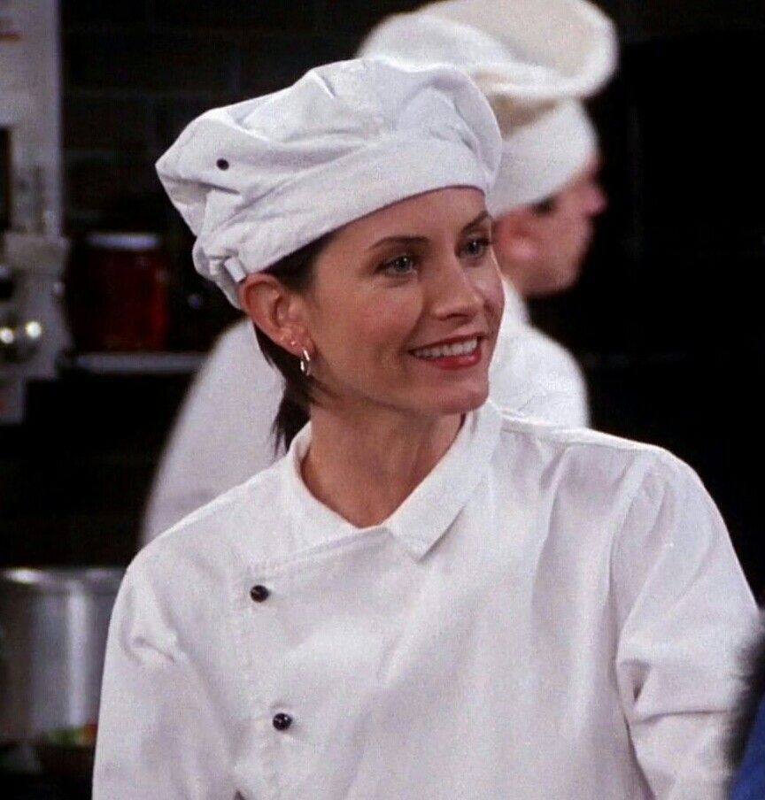

Monica
Full Name
- Monica E. Geller
Day of Birth
- Unknown (probably 1969)
Gender
- Female
Spouses
- Chandler Bing (2001)
Main Job
- Sous-Chef and later Head Chef
Portrayed by
- Courteney Cox
The perfectionistic power woman
Monica Geller, portrayed by Courteney Cox, is the high-achieving, perfectionistic powerhouse among the group of friends.
With her impeccable organizational skills, relentless determination, and unwavering work ethic, Monica's dedication to
excellence is unmatched.
Known for her fastidiousness and innate need for order, Monica's attention to detail extends to every aspect of her life,
from meticulously organized closets to perfectly executed dinner parties. Her culinary prowess is legendary, and she delights
in cooking for her loved ones, infusing each meal with love and her own unique flair.
Underneath her seemingly buttoned-up exterior, Monica possesses a fiery spirit and a fiercely competitive nature. From
her epic battles in ping pong and foosball to her unyielding pursuit of being the best, Monica approaches life with a
tenacity that drives her to excel in all endeavors.
Monica's journey towards self-discovery and personal growth is a cornerstone of her character. From her tumultuous romantic
relationships to her evolving career, she navigates the highs and lows with grace and resilience. Monica's unwavering loyalty
and unwavering support for her friends are evident in her role as the heart and soul of the group.
While Monica's perfectionism can sometimes lead to moments of stress and obsession, her innate warmth and loving nature shine
through. Her protective instincts and nurturing qualities make her a pillar of strength for her friends and a comforting
presence during challenging times.

Monica's journey towards finding her true self is also intertwined with her complex relationship with her older brother,
Ross. Their sibling dynamic, marked by love, rivalry, and occasional spats, showcases the depth of their connection.
Monica's nurturing side often shines through as she provides emotional support and guidance to Ross, serving as a rock
during his tumultuous romantic escapades and personal struggles.
Throughout the series, Monica's resilience is evident in her determination to pursue her passions and overcome obstacles.
From her early days as a struggling chef to her eventual success as a head chef in a renowned restaurant, Monica's journey
in the culinary world is a testament to her unwavering dedication and the rewards of hard work and perseverance.
Monica's evolution extends beyond her professional aspirations, as she navigates the complexities of romantic relationships.
From her enduring love for Chandler to her earlier relationships, Monica discovers the importance of vulnerability, trust,
and emotional intimacy. Her journey highlights the growth and maturity that come with finding and nurturing a loving
partnership.
In summary, Monica Geller is a multifaceted character who encompasses determination, culinary expertise, and unwavering
loyalty. Her journey of self-discovery, professional growth, and the pursuit of love adds depth, humor, and heart to the
iconic sitcom. With her unwavering support, fierce competitiveness, and enduring friendship, Monica leaves a lasting
impact on the hearts of viewers around the world.